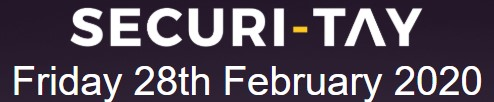

ENU Extra-Curricular

Edinburgh Napier University Security (ENUSEC) is a society which brings a lot of security enthusiasts together to learn, share and compete in an incredibly fun fashion. Events are both local and international and are key to developing your skillset, whatever that may be. There is weekly meetups which include talks from students and other professionals.
Abertay Ethical Hacking Society's annual conference. Has a lot of very informative talks set in Dundee.